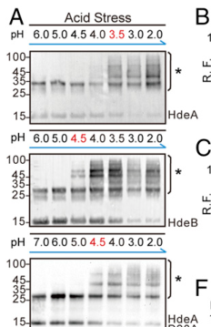

HdeA is a small (89-residue mature form) periplasmic acid-stress chaperone in E. coli that protects periplasmic proteins from aggregation during transit through the mammalian stomach (pH 1-3). At neutral pH, HdeA exists as a well-folded, inactive homodimer stabilized by an intramolecular disulfide bond (Cys39-Cys87). Upon exposure to extremely acidic pH (below 3), the dimer dissociates and each monomer undergoes an order-to-disorder transition, exposing hydrophobic surfaces that bind acid-denatured substrate proteins non-specifically (PMID:15911614, PMID:30573682). HdeA functions as an ATP-independent holdase in the ATP-devoid periplasm, preventing irreversible aggregation of denatured proteins. Upon return to neutral pH, HdeA slowly releases substrates, keeping the concentration of aggregation-sensitive folding intermediates below the aggregation threshold, thereby facilitating their refolding (PMID:20080625). HdeA cooperates with its paralog HdeB and other periplasmic chaperones (DegP, SurA) during acid stress recovery (PMID:17085547, PMID:21892184). HdeA is essential for acid resistance in pathogenic enteric bacteria (PMID:10623550).
| GO Term | Evidence | Action | Reason |
|---|---|---|---|
|
GO:0030288
outer membrane-bounded periplasmic space
|
IEA
GO_REF:0000002 |
ACCEPT |
Summary: IEA annotation based on InterPro domain matches (IPR024972, IPR036831). HdeA is well-established as a periplasmic protein with a cleavable signal peptide (residues 1-21) (PMID:8455549, PMID:9298646). This IEA is consistent with and subsumed by the IDA annotation to the same term from PMID:9298646.
Reason: Correct localization. HdeA is a secreted periplasmic protein. Multiple studies confirm periplasmic localization including direct protein sequencing from periplasmic fractions (PMID:9298646) and UniProt annotation with signal peptide (residues 1-21). The IEA is redundant with the IDA but not incorrect.
Supporting Evidence:
PMID:9298646
enriched for proteins based on subcellular location and found several proteins in unexpected subcellular locations
|
|
GO:0042597
periplasmic space
|
IEA
GO_REF:0000120 |
ACCEPT |
Summary: IEA annotation from UniProt subcellular location mapping (UniProtKB-SubCell:SL-0200). GO:0042597 "periplasmic space" is a more general term than GO:0030288 "outer membrane-bounded periplasmic space". HdeA is localized to the periplasm as confirmed by multiple experimental studies.
Reason: Correct but more general than GO:0030288. The periplasm annotation is well supported by UniProt annotation and experimental evidence. Although the more specific GO:0030288 is also annotated, this broader IEA is not wrong. UniProt function comment states "Periplasm" with evidence from HAMAP-Rule:MF_00946 and PMID:17085547.
Supporting Evidence:
PMID:17085547
We extracted HdeB from bacteria by the osmotic-shock procedure ...[confirming periplasmic localization of hdeAB operon products]... both proteins are required for optimal protection of the bacterial periplasm against acid stress
|
|
GO:0071468
cellular response to acidic pH
|
IEA
GO_REF:0000002 |
ACCEPT |
Summary: IEA annotation from InterPro domain matches. HdeA is a core component of the E. coli acid stress response, activated exclusively at pH below 3 (PMID:15911614). This is a parent term of GO:1990451 "cellular stress response to acidic pH" which is also annotated with experimental evidence. The IEA to this broader term is acceptable as consistent with the more specific experimental annotation.
Reason: Correct and well-supported. HdeA is activated by acidic pH and functions specifically in the acid stress response. GO:0071468 is broader than GO:1990451 which is annotated with IMP evidence from PMID:10623550. The broader IEA is not wrong.
Supporting Evidence:
PMID:15911614
HdeA employs a novel strategy to modulate its chaperone activity: it possesses an ordered conformation that is unable to bind denatured substrate proteins under normal physiological conditions (i.e. at neutral pH) and transforms into a globally disordered conformation that is able to bind substrate proteins under stress conditions (i.e. at a pH below 3)
|
|
GO:1990451
cellular stress response to acidic pH
|
IEA
GO_REF:0000104 |
ACCEPT |
Summary: IEA annotation transferred from manual annotations via shared sequence features (UniRule:UR000106130). GO:1990451 is a child of GO:0071468 "cellular response to acidic pH" and specifically captures the stress response aspect. HdeA is a key effector of the acid stress response, as demonstrated by genetic studies showing hdeA deletion mutants are sensitive to acid stress (PMID:10623550).
Reason: Correct annotation. This IEA is consistent with the IMP annotation to the same term from PMID:10623550. HdeA is activated specifically under acid stress conditions (pH < 3) and is required for optimal acid stress protection.
Supporting Evidence:
PMID:10623550
HDEA, a periplasmic protein that supports acid resistance in pathogenic enteric bacteria
|
|
GO:0042802
identical protein binding
|
IPI
PMID:20080625 Protein refolding by pH-triggered chaperone binding and rele... |
MARK AS OVER ANNOTATED |
Summary: IPI annotation from IntAct based on physical interaction data (HdeA self-interaction). HdeA forms a homodimer at neutral pH that dissociates into active monomers at acidic pH (PMID:10623550, PMID:20080625). The homodimerization is functionally important as the dimer-to-monomer transition is the activation mechanism. However, "identical protein binding" is an uninformative term. The more specific GO:0042803 "protein homodimerization activity" is already annotated with IDA evidence.
Reason: GO:0042802 "identical protein binding" is too vague and does not convey meaningful information about HdeA function. The more specific and informative GO:0042803 "protein homodimerization activity" is already annotated (IDA, PMID:10623550). Per curation guidelines, vague binding terms like "protein binding" and "identical protein binding" should be avoided in favor of more informative MF terms.
Supporting Evidence:
PMID:10623550
HDEA is activated by a dimer-to-monomer transition at acidic pH
|
|
GO:0006457
protein folding
|
IDA
PMID:10623550 HDEA, a periplasmic protein that supports acid resistance in... |
MODIFY |
Summary: IDA annotation for involvement in protein folding from EcoCyc, based on the demonstration that HdeA suppresses aggregation of acid-denatured proteins (PMID:10623550). However, HdeA is primarily a holdase that prevents aggregation rather than actively assisting protein folding. PMID:20080625 later showed that HdeA does facilitate refolding of acid-denatured proteins upon pH neutralization via slow substrate release, but this is a passive mechanism distinct from active foldase activity.
Reason: HdeA does not actively catalyze protein folding in the conventional sense (it is ATP- independent and lacks foldase activity). Its primary function is preventing aggregation of acid-denatured proteins (holdase activity). While PMID:20080625 showed it facilitates refolding upon pH neutralization, this is achieved through passive slow release of substrates rather than active folding assistance. The BP term "protein folding" overstates HdeA's role. A more appropriate term would capture the chaperone-mediated protein refolding or protein stabilization aspect. However, given that refolding does occur as a consequence of HdeA activity (PMID:20080625), the annotation is not entirely wrong -- it is the process outcome rather than the mechanism.
Proposed replacements:
protein refolding
Supporting Evidence:
PMID:20080625
HdeA stably binds substrates at low pH, thereby preventing their irreversible aggregation. pH neutralization subsequently triggers the slow release of substrate proteins from HdeA, keeping the concentration of aggregation-sensitive intermediates below the threshold where they begin to aggregate. This provides a straightforward and ATP-independent mechanism that allows HdeA to facilitate protein refolding.
PMID:10623550
Functional studies demonstrate that HDEA is activated by a dimer-to-monomer transition at acidic pH, leading to suppression of aggregation by acid-denatured proteins
|
|
GO:0044183
protein folding chaperone
|
EXP
PMID:10623550 HDEA, a periplasmic protein that supports acid resistance in... |
ACCEPT |
Summary: EXP annotation from DisProt for protein folding chaperone activity based on PMID:10623550. The crystal structure study demonstrated that HdeA suppresses aggregation of acid-denatured proteins and suggested chaperone-like functions. GO:0044183 "protein folding chaperone" is defined as "binding to a protein or a protein-containing complex to assist the protein folding process." While HdeA does assist in the overall folding process (preventing aggregation and facilitating refolding upon pH return), it is mechanistically a holdase rather than a foldase. However, GO:0044183 is the best available MF term for chaperone function pending creation of a holdase-specific term.
Reason: GO:0044183 is the best available MF term for HdeA's chaperone activity. HdeA binds denatured proteins and assists in the folding process by preventing aggregation and facilitating refolding upon pH neutralization. Although HdeA is mechanistically a holdase (ATP-independent, prevents aggregation in situ), the definition of GO:0044183 ("binding to a protein...to assist the protein folding process") is broad enough to encompass holdase activity. This annotation should be retained as the primary MF annotation pending creation of a holdase-specific GO term.
Supporting Evidence:
PMID:10623550
We suggest that HDEA may support chaperone-like functions during the extremely acidic conditions
PMID:20080625
This provides a straightforward and ATP-independent mechanism that allows HdeA to facilitate protein refolding
file:ECOLI/HdeA/HdeA-deep-research-falcon.md
it is a small (~11 kDa) ATP-independent holdase that prevents acid-denatured **periplasmic proteins** from aggregating and assists refolding after pH neutralization. It is inactive as a folded dimer at neutral pH and active in acid as a partially unfolded monomer/disordered state.
|
|
GO:0044183
protein folding chaperone
|
IDA
PMID:10623550 HDEA, a periplasmic protein that supports acid resistance in... |
ACCEPT |
Summary: IDA annotation from DisProt for the same term and reference as the EXP annotation above. This is a duplicate with a different evidence code (IDA vs EXP) from the same source (DisProt) and same reference (PMID:10623550). Both are acceptable as duplicates with different evidence codes are permitted.
Reason: Same rationale as the EXP annotation above. GO:0044183 is the best available MF term for HdeA's chaperone function. The IDA evidence code is appropriate given the direct aggregation suppression assays reported in PMID:10623550.
Supporting Evidence:
PMID:10623550
HDEA is activated by a dimer-to-monomer transition at acidic pH, leading to suppression of aggregation by acid-denatured proteins
|
|
GO:0044183
protein folding chaperone
|
EXP
PMID:30573682 Structural basis and mechanism of the unfolding-induced acti... |
ACCEPT |
Summary: EXP annotation from DisProt based on PMID:30573682. This study used advanced NMR methods to characterize HdeA's activated-state conformation under acidic conditions and identified client-binding sites. It provided structural evidence for the chaperone mechanism: two hydrophobic patches are exposed upon acid-induced unfolding and are essential for client interactions.
Reason: PMID:30573682 provides direct structural evidence for HdeA's chaperone function at the atomic level, identifying the client-binding sites and the multistep activation mechanism. GO:0044183 remains the best available MF term.
Supporting Evidence:
PMID:30573682
the structure of activated HdeA becomes largely disordered and exposes two hydrophobic patches essential for client interactions
file:ECOLI/HdeA/HdeA-deep-research-falcon.md
it is **inactive when folded** and becomes **active when partially unfolded/disordered** under acid stress.
|
|
GO:0030288
outer membrane-bounded periplasmic space
|
IDA
PMID:9298646 Comparing the predicted and observed properties of proteins ... |
ACCEPT |
Summary: IDA annotation from EcoCyc based on the Link et al. (1997) proteomics study which identified HdeA by 2-DE and Edman sequencing from periplasmic fractions. The study confirmed that HdeA (then "10K-S") is a periplasmic protein with a cleaved signal peptide.
Reason: Well-supported localization. The study used subcellular fractionation and protein identification by sequencing to confirm HdeA is in the periplasm. Additionally confirmed by UniProt signal peptide annotation (residues 1-21) and subsequent studies (PMID:17085547).
Supporting Evidence:
PMID:9298646
We identified several highly abundant proteins, YjbJ, YjbP, YggX, HdeA, and AhpC, which would not have been predicted from the genomic sequence alone
PMID:9298646
We enriched for proteins based on subcellular location
file:ECOLI/HdeA/HdeA-deep-research-falcon.md
HdeA operates in the **periplasm**, where it interacts with periplasmic proteins that are prone to acid denaturation/aggregation when external pH drops.
|
|
GO:0042803
protein homodimerization activity
|
IDA
PMID:10623550 HDEA, a periplasmic protein that supports acid resistance in... |
ACCEPT |
Summary: IDA annotation from EcoCyc. The crystal structure of HdeA at 2.0 A resolution (PMID:10623550) revealed that HdeA forms a homodimer at neutral pH. The dimer-to- monomer transition at acidic pH is the activation mechanism for chaperone function. The proteomics study (PMID:9298646) also noted HdeA exists as a "covalent homomultimer." The homodimerization is functionally significant as it represents the inactive storage form.
Reason: Accurate and functionally important annotation. HdeA homodimerization is well characterized structurally (PMID:10623550, PMID:9731767) and is directly relevant to the activation mechanism (dimer-to-monomer transition at low pH). This is more informative than the broader GO:0042802 "identical protein binding."
Supporting Evidence:
PMID:10623550
HDEA is activated by a dimer-to-monomer transition at acidic pH
PMID:9298646
Our data suggest that AhpC, CspC, and HdeA exist as covalent homomultimers
file:ECOLI/HdeA/HdeA-deep-research-falcon.md
HdeA undergoes **dimer-to-monomer transition** plus **partial unfolding/order-to-disorder conversion**, exposing hydrophobic client-binding patches.
|
|
GO:0051082
unfolded protein binding
|
IDA
PMID:15911614 Periplasmic protein HdeA exhibits chaperone-like activity ex... |
MODIFY |
Summary: IDA annotation from EcoCyc based on PMID:15911614 which demonstrated that HdeA binds acid-denatured proteins at low pH. The study showed HdeA transforms into a disordered conformation at pH below 3 and exposes hydrophobic surfaces that bind denatured substrates, suppressing their aggregation. GO:0051082 "unfolded protein binding" is proposed for obsoletion (go-ontology#30962). HdeA is an ATP-independent, in-situ holdase that prevents aggregation of acid-denatured periplasmic proteins. The most mechanistically appropriate replacement is GO:0140309 "unfolded protein carrier activity," which was created for holdase-type chaperones. However, there is a caveat: GO:0140309 was created specifically for TIM carrier-holdases that escort unfolded proteins between cellular compartments (go-ontology#30552), and its definition requires escort "between two different cellular components." HdeA functions in situ in the periplasm and does not escort proteins between compartments. A general "holdase chaperone activity" NTR would be the ideal replacement (see UNFOLDED_PROTEIN_BINDING.md).
Reason: GO:0051082 is proposed for obsoletion. HdeA is a well-characterized holdase: it binds acid-denatured proteins at low pH, prevents their aggregation in the periplasm, and facilitates refolding upon pH neutralization by slow substrate release (PMID:15911614, PMID:20080625). It is ATP-independent, consistent with the periplasm lacking ATP. GO:0140309 "unfolded protein carrier activity" captures the holdase mechanism but its definition strictly requires escort between cellular components, which HdeA does not perform. Until a general holdase NTR is created, GO:0140309 is the closest available term. The existing GO:0044183 annotations also partially capture HdeA's function but from the foldase perspective.
Proposed replacements:
unfolded protein binding (retain until holdase NTR is created)
Supporting Evidence:
PMID:15911614
HdeA employs a novel strategy to modulate its chaperone activity: it possesses an ordered conformation that is unable to bind denatured substrate proteins under normal physiological conditions (i.e. at neutral pH) and transforms into a globally disordered conformation that is able to bind substrate proteins under stress conditions (i.e. at a pH below 3)
PMID:15911614
our data indicate that HdeA exposes hydrophobic surfaces that appear to be involved in the binding of denatured substrate proteins at extremely low pH values
PMID:20080625
HdeA stably binds substrates at low pH, thereby preventing their irreversible aggregation. pH neutralization subsequently triggers the slow release of substrate proteins from HdeA
file:ECOLI/HdeA/HdeA-deep-research-falcon.md
HdeA prevents irreversible aggregation while pH is low, and clients can refold upon neutralization when HdeA releases them.
|
|
GO:1990451
cellular stress response to acidic pH
|
IMP
PMID:10623550 HDEA, a periplasmic protein that supports acid resistance in... |
ACCEPT |
Summary: IMP annotation from EcoCyc. PMID:10623550 demonstrated that HdeA supports acid resistance in pathogenic enteric bacteria. The crystal structure study combined functional analysis showing that HdeA is activated at acidic pH and suppresses aggregation of acid-denatured proteins. This is the core biological process for HdeA.
Reason: Core biological process annotation. HdeA is a central effector of the cellular stress response to acidic pH. The IMP evidence is appropriate as the study demonstrated the acid-resistance phenotype supported by HdeA. GO:1990451 is a child of GO:0071468 "cellular response to acidic pH" and specifically captures the stress response aspect, which is the relevant context for HdeA function.
Supporting Evidence:
PMID:10623550
HDEA, a periplasmic protein that supports acid resistance in pathogenic enteric bacteria
PMID:10623550
HDEA is activated by a dimer-to-monomer transition at acidic pH, leading to suppression of aggregation by acid-denatured proteins
file:ECOLI/HdeA/HdeA-deep-research-falcon.md
loss of hdeA decreases survival/viability
|
|
GO:0030288
outer membrane-bounded periplasmic space
|
RCA
PMID:8455549 Function of the Escherichia coli nucleoid protein, H-NS: mol... |
ACCEPT |
Summary: RCA annotation from EcoCyc based on PMID:8455549 (Yoshida et al., 1993), which originally identified the hdeA gene (then called 10K-S or yhiB) as part of an operon whose expression is enhanced in an hns deletion mutant. The study cloned and sequenced the gene but did not directly demonstrate periplasmic localization experimentally. However, the signal peptide is evident from the sequence. This is consistent with but weaker than the IDA annotation from PMID:9298646.
Reason: The RCA evidence is appropriate for sequence-based prediction of periplasmic localization from the identified signal peptide. This annotation is redundant with the IDA from PMID:9298646 but not incorrect. The original identification paper correctly predicted periplasmic localization.
Supporting Evidence:
PMID:8455549
The genes coding for the other two proteins, 10K-L and 10K-S, are located at 77.5 min on the genetic map. Their nucleotide sequences were determined
|
The research report should be a detailed narrative explaining the function, biological processes, and localization of the gene product. Citations should be given for all claims.
You should prioritize authoritative reviews and primary scientific literature when conducting research. You can supplement
this with annotations you find in gene/protein databases, but these can be outdated or inaccurate.
We are specifically interested in the primary function of the gene - for enzymes, what reaction is catalyzed, and what is the substrate specificity? For transporters, what is the substrate? For structural proteins or adapters, what is the broader structural role? For signaling molecules, what is the role in the pathway.
We are interested in where in or outside the cell the gene product carries out its function.
We are also interested in the signaling or biochemical pathways in which the gene functions. We are less interested in broad pleiotropic effects, except where these elucidate the precise role.
Include evidence where possible. We are interested in both experimental evidence as well as inference from structure, evolution, or bioinformatic analysis. Precise studies should be prioritized over high-throughput, where available.
The E. coli K-12 gene hdeA (UniProt P0AES9) encodes HdeA, a small periplasmic, ATP-independent, acid-activated “holdase” molecular chaperone that prevents aggregation of periplasmic proteins during transit through extremely acidic environments (e.g., stomach-like pH) and supports recovery upon return to neutral pH. HdeA is inactive as a well-folded α-helical homodimer at neutral pH and becomes active by a pH-triggered order-to-disorder transition (partial unfolding with dimer-to-monomer dissociation) that exposes hydrophobic client-binding surfaces. Multiple primary studies define an activation window centered below ~pH 3–3.5 and provide mechanistic detail (protonation of acidic residues, multistep unlocking, possible intermediate states) and experimentally supported client proteins (e.g., SurA, OppA, MalE). Recent (2024) sources emphasize that periplasmic chaperone protection is a major “investment” class in systems-level stress models (StressME) and that chaperone logic (especially HdeB for mild acidity) is being used in engineering acid-tolerant E. coli strains for bioproduction. (kim2021stressresponsiveperiplasmicchaperones pages 5-7, yu2017characterizationsofthe pages 4-7, salmon2018themechanismof pages 1-2, li2024responseofescherichia pages 5-7, qin2024characterizationofmild pages 2-3)
The literature retrieved here consistently refers to HdeA as the periplasmic acid-stress chaperone of enteric bacteria including E. coli, functioning by acid-induced unfolding/monomerization and preventing aggregation of periplasmic proteins at very low pH. This matches the provided UniProt identity: P0AES9, HdeA family, acid stress chaperone HdeA, precursor/periplasmic protein. (kim2021stressresponsiveperiplasmicchaperones pages 5-7, yu2017characterizationsofthe pages 1-4, wu2008conservedamphiphilicfeature pages 1-2)
A key concept for HdeA is conditional disorder: it is inactive when folded and becomes active when partially unfolded/disordered under acid stress. Acid stress protonates acidic residues and destabilizes the dimer, exposing hydrophobic surfaces that bind unfolded client proteins. This is a “holdase” mode: HdeA prevents irreversible aggregation while pH is low, and clients can refold upon neutralization when HdeA releases them. (yu2017characterizationsofthe pages 1-4, dahl2015hdebfunctionsas pages 8-9, salmon2018themechanismof pages 1-2)
The periplasm equilibrates rapidly with external conditions, making periplasmic proteins especially vulnerable to extracellular low pH. Under extreme acid stress, periplasmic ionic conditions can be severe; a Donnan-effect chloride surge >0.6 M has been discussed as accelerating aggregation and motivating a robust periplasmic quality-control system including HdeA/HdeB. (kim2021stressresponsiveperiplasmicchaperones pages 5-7)
HdeA and HdeB are closely related periplasmic chaperones, but their pH activation windows differ: HdeA primarily supports extreme acidity whereas HdeB is more active under milder acidic conditions. Reviews and primary comparative experiments commonly place HdeA activity roughly in pH 1–3 and HdeB in pH 3–5 (often ~pH 4–5). (kim2021stressresponsiveperiplasmicchaperones pages 5-7, li2024responseofescherichia pages 5-7, zhang2016comparativeproteomicsreveal pages 5-6)
At neutral pH, HdeA is a well-folded dimer with a buried hydrophobic core. As pH decreases, protonation of acidic residues weakens electrostatic contacts and promotes partial unfolding and dissociation, exposing hydrophobic patches that bind client proteins. (yu2017characterizationsofthe pages 4-7, garrison2014nmr‐monitoredtitrationof pages 1-3, wu2008conservedamphiphilicfeature pages 1-2)
Multiple studies support a steep transition where HdeA becomes strongly activated only at sufficiently low pH. For example, biophysical analysis described a sharp folded-dimer to unfolded-monomer transition between pH 3 and pH 2 and a non-monotonic stability profile with maximal dimer stability near pH ~5; dissociation at pH 2.3 is endothermic with ΔH ≈ 10.6 ± 0.3 kcal/mol. (salmon2018themechanismof pages 1-2)
NMR-based work supports the idea that Asp/Glu neutralization progressively loosens the dimer prior to full activation and that acid sensitivity is distributed across regions rather than governed by a single residue alone. (garrison2014nmr‐monitoredtitrationof pages 1-3)
In NMR interaction experiments with native substrates, HdeA’s structural transition occurs at ~pH 3 in substrate-free conditions, but substrate interactions can begin at higher pH depending on the substrate’s own pH-induced unfolding and exposed hydrophobic surface area. Thus, activation is not purely “protein-intrinsic”; it is coupled to client availability/denaturation. (yu2017characterizationsofthe pages 4-7)
HdeA is proposed to behave as an amphiphilic chaperone forming heterogeneous complexes with variable stoichiometry. A reported in vitro binding plateau reached roughly ~10 HdeA molecules per substrate for OppA and MalE under the tested conditions; termini contribute to maintaining complex solubility, as truncation can lead to co-precipitation with substrates. (yu2017characterizationsofthe pages 22-25)
HdeA operates in the periplasm, where it interacts with periplasmic proteins that are prone to acid denaturation/aggregation when external pH drops. (yu2017characterizationsofthe pages 1-4, kim2021stressresponsiveperiplasmicchaperones pages 5-7)
Genetic and physiological evidence indicates loss of hdeA decreases survival/viability after strong acid exposure, consistent with HdeA being a key periplasmic quality-control factor for extreme acid stress. HdeA and HdeB can have complementary roles: HdeA is more important at pH ~2, whereas HdeB provides comparatively more protection at pH ~3. (kern2007escherichiacolihdeb pages 1-1, wu2008conservedamphiphilicfeature pages 1-2)
Evidence for HdeA clients includes:
- SurA, MalE, OppA: native substrates studied by NMR interaction assays during acid stress. (yu2017characterizationsofthe pages 4-7)
- Proteomics-defined client sets shared with HdeB, including SurA, BglX, DegP, DsbA, OppA, with DppA identified as HdeA-preferred in one comparative proteomics strategy; additional proteostasis-related factors (e.g., DsbC/DsbG/PpiD, proteases) are also discussed as clients or associated proteins during acid stress. (zhang2016comparativeproteomicsreveal media 0fd6de6e)
A key data-driven “current model” from comparative proteomics and in vivo photocrosslinking is that client engagement is pH-windowed: HdeB begins client binding at about pH ≤ 4.5, whereas HdeA begins at about pH ≤ 3.5, consistent with HdeA being reserved for more extreme acidity. (zhang2016comparativeproteomicsreveal pages 5-6, zhang2016comparativeproteomicsreveal media 0fd6de6e)
A 2024 narrative review summarizes HdeA/HdeB as periplasmic chaperones with distinct operative pH ranges (HdeA ~pH 1–3; HdeB ~pH 3–5), emphasizing ATP-independent anti-aggregation activity and positioning these chaperones within broader E. coli acid-stress response systems and industrial/bioprocess relevance (e.g., organic acid production). (Publication date: Aug 2024; URL: https://doi.org/10.3390/microorganisms12091774) (li2024responseofescherichia pages 5-7, li2024responseofescherichia pages 7-9)
A 2024 systems-level modeling framework (StressME) integrates acid, oxidative, and thermal stress response models, explicitly noting that the acid-stress module (AcidifyME) includes periplasmic chaperone protection mechanisms and that E. coli uses periplasmic chaperones HdeA/HdeB to prevent periplasmic protein aggregation under acidic conditions. (Publication date: Feb 2024; URL: https://doi.org/10.1371/journal.pcbi.1011865) (zhao2024stressmeunifiedcomputing pages 2-3)
A 2024 study characterizing an engineered acid-tolerant strain (SC3124) used a synthetic module including gadE + hdeB + sodB + katE to improve performance under mild acid (tested at pH 6.0). Quantitatively, final OD600 at pH 6.0 was reported as 131% and 124% of the parent strain measured at pH 6.8 and pH 6.0, respectively; in a lysine-production background, lysine yield increased to 115% (pH 6.0) and 118% (pH 6.8) in 1.3 L bioreactors. This does not directly manipulate hdeA, but it demonstrates contemporary exploitation of periplasmic chaperone mechanisms in applications, with HdeB chosen for the mild-acid regime where it is more efficient than HdeA. (Publication date: Jul 2024; URL: https://doi.org/10.3390/microorganisms12081565) (qin2024characterizationofmild pages 2-3, qin2024characterizationofmild pages 1-2)
Recent reviews highlight that engineering acid resistance in E. coli can reduce the need for base addition during fermentation, supporting more economical production of acids and other chemicals. In this framing, periplasmic chaperones (HdeA/HdeB) are part of the macromolecular protection toolkit, complementing cytoplasmic pH homeostasis and membrane adaptations. (li2024responseofescherichia pages 7-9, li2024responseofescherichia pages 5-7)
StressME provides an open-source computational platform intended to quantify multi-stress trade-offs (including chaperones in different compartments) and is positioned as useful for engineering/health applications where stress tolerance and proteome allocation are important. (zhao2024stressmeunifiedcomputing pages 2-3)
Several authoritative sources converge on a mechanistic consensus: HdeA is a periplasmic, acid-activated holdase that functions through an acid-induced unfolding/monomerization that exposes client-binding hydrophobic surfaces, followed by client release and refolding upon neutralization. (kim2021stressresponsiveperiplasmicchaperones pages 5-7, salmon2018themechanismof pages 1-2, li2024responseofescherichia pages 5-7)
A key expert-level nuance is that HdeA activation is multifactorial: not only pH, but also client unfolding propensity and binding can modulate the apparent activation threshold (i.e., clients can engage at higher pH than HdeA’s intrinsic unfolding midpoint). This supports a view of HdeA as part of a coordinated, pH-graded periplasmic proteostasis network rather than a simple binary pH sensor. (yu2017characterizationsofthe pages 4-7, zhang2016comparativeproteomicsreveal pages 5-6)
Cropped figure panels from Zhang et al. (2016, PNAS; https://doi.org/10.1073/pnas.1606360113; publication date: Sep 2016) summarize: (i) distinct in vivo pH windows for HdeA vs HdeB client binding, (ii) pH-dependent conformational activation readouts, and (iii) aggregation suppression assays for representative clients. (zhang2016comparativeproteomicsreveal media 0fd6de6e, zhang2016comparativeproteomicsreveal media 47f2f7db, zhang2016comparativeproteomicsreveal media 36fdf8a6, zhang2016comparativeproteomicsreveal media e77930f4, zhang2016comparativeproteomicsreveal media 2eeccf45)
hdeA (P0AES9) encodes a periplasmic, ATP-independent acid-stress chaperone (holdase) that is inactive as a folded dimer at neutral pH and becomes active at extreme acidity by dissociation and partial unfolding (conditionally disordered activation). In the activated state, HdeA binds diverse acid-denatured periplasmic client proteins (including SurA, OppA, MalE among others identified by proteomics), preventing irreversible aggregation; upon neutralization, HdeA releases clients enabling refolding. HdeA is crucial for survival under stomach-like pH and functions with the related chaperone HdeB, which acts at higher (less acidic) pH. (yu2017characterizationsofthe pages 1-4, salmon2018themechanismof pages 1-2, zhang2016comparativeproteomicsreveal pages 5-6)
| Claim/Topic | Key details | Evidence type | Source (authors, year, journal) | URL | Notes/quantitative values |
|---|---|---|---|---|---|
| Core function | HdeA (UniProt P0AES9) is the periplasmic acid-stress chaperone of E. coli K-12; it is a small (~11 kDa) ATP-independent holdase that prevents acid-denatured periplasmic proteins from aggregating and assists refolding after pH neutralization. It is inactive as a folded dimer at neutral pH and active in acid as a partially unfolded monomer/disordered state. (kim2021stressresponsiveperiplasmicchaperones pages 5-7, yu2017characterizationsofthe pages 1-4, li2024responseofescherichia pages 5-7) | Review + primary | Kim et al., 2021, Front. Mol. Biosci.; Yu et al., 2017, Biochemistry; Li et al., 2024, Microorganisms | https://doi.org/10.3389/fmolb.2021.678697; https://doi.org/10.1021/acs.biochem.7b00724; https://doi.org/10.3390/microorganisms12091774 | Functional window mainly pH 1–3 for HdeA; ATP-independent anti-aggregation chaperone. |
| Activation mechanism and pH thresholds | Acidification protonates acidic residues, destabilizing electrostatic contacts and the dimer interface; HdeA undergoes dimer-to-monomer transition plus partial unfolding/order-to-disorder conversion, exposing hydrophobic client-binding patches. In substrate-free conditions, major activation occurs around pH ~3 to 2; HdeA is largely inactive above ~pH 3–4 and strongly active below ~pH 3–3.5. Mild acid can transiently stabilize the dimer near pH ~5, with a sharp folded-dimer to unfolded-monomer transition between pH 3 and 2. (yu2017characterizationsofthe pages 4-7, garrison2014nmr‐monitoredtitrationof pages 1-3, dahl2015hdebfunctionsas pages 8-9, salmon2018themechanismof pages 1-2, wu2008conservedamphiphilicfeature pages 1-2) | Primary structural/biophysical | Yu et al., 2017, Biochemistry; Garrison & Crowhurst, 2014, Protein Sci.; Dahl et al., 2015, JBC; Salmon et al., 2018, J. Mol. Biol.; Wu et al., 2008, Biochem. J. | https://doi.org/10.1021/acs.biochem.7b00724; https://doi.org/10.1002/pro.2402; https://doi.org/10.1074/jbc.m114.612986; https://doi.org/10.1016/j.jmb.2017.11.002; https://doi.org/10.1042/bj20071682 | HdeA active mainly pH 1–3; HdeB activates earlier (~pH 4.5) and HdeA later (≤3.5) in comparative studies. |
| Localization | HdeA acts in the periplasm, the compartment that rapidly equilibrates with external acidity and is therefore vulnerable to acid-induced protein unfolding/aggregation. (kim2021stressresponsiveperiplasmicchaperones pages 5-7, yu2017characterizationsofthe pages 1-4) | Review + primary | Kim et al., 2021, Front. Mol. Biosci.; Yu et al., 2017, Biochemistry | https://doi.org/10.3389/fmolb.2021.678697; https://doi.org/10.1021/acs.biochem.7b00724 | Matches UniProt precursor/periplasmic annotation for P0AES9. |
| Client proteins | Experimentally discussed native/periplasmic clients include SurA, MalE, OppA by NMR interaction studies; comparative proteomics identified common or preferred clients including SurA, BglX, DegP, DsbA, OppA, plus proteostasis factors such as DsbC, DsbG, PpiD, DegQ, Tsp, PtrA. DppA was HdeA-preferred in the 2016 proteomics study. (yu2017characterizationsofthe pages 4-7, zhang2016comparativeproteomicsreveal media 0fd6de6e) | Primary NMR + proteomics | Yu et al., 2017, Biochemistry; Zhang et al., 2016, PNAS | https://doi.org/10.1021/acs.biochem.7b00724; https://doi.org/10.1073/pnas.1606360113 | Broad client scope focused on acid-unfolding periplasmic proteins; ~80% of identified clients were common to HdeA and HdeB. |
| Stoichiometry / binding mode | HdeA binds substrates as a heterogeneous, amphiphilic, dynamic complex rather than a single rigid stoichiometric complex. Reported binding plateau reached roughly 10 HdeA molecules per substrate for OppA and MalE under assay conditions. Termini help maintain complex solubility; deletion mutants can still bind but show reduced solubility/co-precipitation. (yu2017characterizationsofthe pages 22-25, yu2017characterizationsofthe pages 1-4) | Primary NMR/mechanistic | Yu et al., 2017, Biochemistry | https://doi.org/10.1021/acs.biochem.7b00724 | Approximate plateau stoichiometry ~10:1 (HdeA:substrate), likely reflecting in vitro excess rather than physiological fixed stoichiometry. |
| Periplasmic chloride / Donnan effect | Extreme acid stress in the periplasm is worsened by a Donnan-effect chloride surge, reported to exceed 0.6 M Cl-, which accelerates protein aggregation and helps explain the need for HdeA/HdeB periplasmic chaperones. (kim2021stressresponsiveperiplasmicchaperones pages 5-7) | Review | Kim et al., 2021, Front. Mol. Biosci. | https://doi.org/10.3389/fmolb.2021.678697 | Useful physiological context for why HdeA is highly expressed and acid-essential. |
| Genetic phenotype / acid resistance role | hdeA mutants show reduced survival/viability after low-pH exposure; loss of HdeA function gives a strongly acid-sensitive phenotype. HdeA is a major chaperone at pH ~2, while HdeB contributes more at pH 3; both contribute to optimal acid survival in vivo. (kern2007escherichiacolihdeb pages 1-1, wu2008conservedamphiphilicfeature pages 1-2, kern2007escherichiacolihdeb pages 7-8, kim2021stressresponsiveperiplasmicchaperones pages 5-7) | Primary genetics/biochemistry + review | Kern et al., 2007, J. Bacteriol.; Wu et al., 2008, Biochem. J.; Kim et al., 2021, Front. Mol. Biosci. | https://doi.org/10.1128/jb.01522-06; https://doi.org/10.1042/bj20071682; https://doi.org/10.3389/fmolb.2021.678697 | HdeA is especially important under stomach-like pH 1–3; complementation with both HdeA/HdeB gave better restoration than either alone in comparative studies. |
| Operon / regulation | hdeAB forms an operon on the acid fitness island. Expression is regulated by acid-response pathways including EvgSA→YdeO and is increased via Crl through RpoS; HdeA is reported as the 6th most abundant stationary-phase protein. (kim2021stressresponsiveperiplasmicchaperones pages 5-7) | Review/regulatory synthesis | Kim et al., 2021, Front. Mol. Biosci. | https://doi.org/10.3389/fmolb.2021.678697 | Strong stationary-phase abundance underscores central role in acid preparedness. |
| 2016 proteomics pH windows | In vivo photocrosslinking/proteomics defined distinct client-binding windows: HdeB begins binding at pH ≤4.5, whereas HdeA begins at pH ≤3.5. Aggregation assays at pH 2 showed HdeA more effective than HdeB for some clients; both improved soluble SurA at pH 2. (zhang2016comparativeproteomicsreveal pages 5-6, zhang2016comparativeproteomicsreveal media 0fd6de6e) | Primary proteomics/aggregation assays | Zhang et al., 2016, PNAS | https://doi.org/10.1073/pnas.1606360113 | Assay details reported include SurA:chaperone 1:1 at pH 2 and in vivo crosslinking after pH 2.3 for 30 min plus 365 nm UV for 15 min. |
| Quantitative thermodynamics / structural switch | HdeA self-association shows nonmonotonic pH dependence, with maximum dimer stability near pH ~5; enthalpy for dimer→monomer dissociation at pH 2.3 was reported as 10.6 ± 0.3 kcal/mol. Protonation of Glu37 contributes to activation, and a low-populated partially folded intermediate may participate in unfolding/function. (salmon2018themechanismof pages 1-2) | Primary biophysics | Salmon et al., 2018, J. Mol. Biol. | https://doi.org/10.1016/j.jmb.2017.11.002 | Supports updated mechanistic view that activation is multistep, not a simple binary switch. |
| 2024 acid-stress review & engineering stats | Recent review reiterates HdeA as the extreme-acid periplasmic chaperone (pH 1–3) and highlights engineering of acid resistance for industrial strains. Quantitative engineering examples summarized in the review include 336.3-fold survival increase and 113.6% increase in D-lactic acid titer via HypB/HypC engineering, and 4509.6-fold survival increase at pH 4.0 via rffG overexpression; these are acid-resistance context metrics rather than HdeA-specific interventions. (li2024responseofescherichia pages 5-7, li2024responseofescherichia pages 7-9) | 2024 review / application synthesis | Li et al., 2024, Microorganisms | https://doi.org/10.3390/microorganisms12091774 | Useful for applied context: HdeA/HdeB are part of the acid-resistance toolkit leveraged in strain design, though the cited quantitative gains here are not direct hdeA overexpression data. |
| 2024 StressME mention | StressME integrates the prior AcidifyME acid-stress framework and explicitly includes periplasmic chaperone protection mechanisms, noting that HdeA/HdeB are major contributors to acid-response proteome allocation in E. coli. (zhao2024stressmeunifiedcomputing pages 2-3) | 2024 computational model | Zhao et al., 2024, PLOS Comput. Biol. | https://doi.org/10.1371/journal.pcbi.1011865 | Provides systems-level support that periplasmic chaperones are major acid-stress investment classes, though no HdeA-only quantitative coefficient is given in the excerpt. |
| 2024 engineered strain SC3124 metrics | In an engineered acid-tolerant strain (SC3124), a synthetic module containing gadE + hdeB + sodB + katE improved mild-acid performance. Final OD600 at pH 6.0 was 131% and 124% of parent MG1655 measured at pH 6.8 and pH 6.0, respectively. When transferred to a lysine-production background, the module increased lysine yield to 115% (pH 6.0) and 118% (pH 6.8) versus parent strain in 1.3-L bioreactors. (qin2024characterizationofmild pages 2-3, qin2024characterizationofmild pages 1-2) | 2024 engineering / transcriptomics | Qin et al., 2024, Microorganisms | https://doi.org/10.3390/microorganisms12081565 | Directly demonstrates modern exploitation of periplasmic acid-chaperone logic in strain engineering; uses HdeB rather than HdeA because the target regime was mild acid (pH 5–6 / tested at pH 6.0). |
| Current annotation summary | Functional annotation for P0AES9 / hdeA: acid-activated periplasmic holdase chaperone, member of HdeA family, precursor exported to periplasm; protects acid-labile periplasmic proteins during extreme acid stress, then releases clients on neutralization for refolding. (kim2021stressresponsiveperiplasmicchaperones pages 5-7, yu2017characterizationsofthe pages 1-4, li2024responseofescherichia pages 5-7) | Integrated from review + primary | Kim et al., 2021; Yu et al., 2017; Li et al., 2024 | https://doi.org/10.3389/fmolb.2021.678697; https://doi.org/10.1021/acs.biochem.7b00724; https://doi.org/10.3390/microorganisms12091774 | Best-supported primary role is protein quality control in the acidic periplasm, not catalysis or transport. |
Table: This table condenses the core functional annotation of E. coli HdeA (UniProt P0AES9), including mechanism, localization, regulation, client proteins, and quantitative findings. It also highlights recent 2024 systems and engineering context relevant to acid-stress biology.
References
(kim2021stressresponsiveperiplasmicchaperones pages 5-7): Hyunhee Kim, Kevin Wu, and Changhan Lee. Stress-responsive periplasmic chaperones in bacteria. Frontiers in Molecular Biosciences, May 2021. URL: https://doi.org/10.3389/fmolb.2021.678697, doi:10.3389/fmolb.2021.678697. This article has 67 citations.
(yu2017characterizationsofthe pages 4-7): Xing-Chi Yu, Chengfeng Yang, Jienv Ding, Xiaogang Niu, Yunfei Hu, and Changwen Jin. Characterizations of the interactions between escherichia coli periplasmic chaperone hdea and its native substrates during acid stress. Biochemistry, 56 43:5748-5757, Oct 2017. URL: https://doi.org/10.1021/acs.biochem.7b00724, doi:10.1021/acs.biochem.7b00724. This article has 25 citations and is from a peer-reviewed journal.
(salmon2018themechanismof pages 1-2): Loïc Salmon, Frederick Stull, Sabrina Sayle, Claire Cato, Şerife Akgül, Linda Foit, Logan S. Ahlstrom, Elan Z. Eisenmesser, Hashim M. Al-Hashimi, James C.A. Bardwell, and Scott Horowitz. The mechanism of hdea unfolding and chaperone activation. Journal of molecular biology, 430 1:33-40, Jan 2018. URL: https://doi.org/10.1016/j.jmb.2017.11.002, doi:10.1016/j.jmb.2017.11.002. This article has 27 citations and is from a domain leading peer-reviewed journal.
(li2024responseofescherichia pages 5-7): Zepeng Li, Zhaosong Huang, and Pengfei Gu. Response of escherichia coli to acid stress: mechanisms and applications—a narrative review. Microorganisms, 12:1774, Aug 2024. URL: https://doi.org/10.3390/microorganisms12091774, doi:10.3390/microorganisms12091774. This article has 32 citations.
(qin2024characterizationofmild pages 2-3): Jingliang Qin, Han Guo, Xiaoxue Wu, Shuai Ma, Xin Zhang, Xiaofeng Yang, Bin Liu, Lu Feng, Huanhuan Liu, and Di Huang. Characterization of mild acid stress response in an engineered acid-tolerant escherichia coli strain. Microorganisms, 12:1565, Jul 2024. URL: https://doi.org/10.3390/microorganisms12081565, doi:10.3390/microorganisms12081565. This article has 2 citations.
(yu2017characterizationsofthe pages 1-4): Xing-Chi Yu, Chengfeng Yang, Jienv Ding, Xiaogang Niu, Yunfei Hu, and Changwen Jin. Characterizations of the interactions between escherichia coli periplasmic chaperone hdea and its native substrates during acid stress. Biochemistry, 56 43:5748-5757, Oct 2017. URL: https://doi.org/10.1021/acs.biochem.7b00724, doi:10.1021/acs.biochem.7b00724. This article has 25 citations and is from a peer-reviewed journal.
(wu2008conservedamphiphilicfeature pages 1-2): Ye E. Wu, Weizhe Hong, Chong Liu, Lingqing Zhang, and Zengyi Chang. Conserved amphiphilic feature is essential for periplasmic chaperone hdea to support acid resistance in enteric bacteria. The Biochemical journal, 412 2:389-97, Jun 2008. URL: https://doi.org/10.1042/bj20071682, doi:10.1042/bj20071682. This article has 47 citations.
(dahl2015hdebfunctionsas pages 8-9): Jan-Ulrik Dahl, Philipp Koldewey, Loïc Salmon, Scott Horowitz, James C.A. Bardwell, and Ursula Jakob. Hdeb functions as an acid-protective chaperone in bacteria. Journal of Biological Chemistry, 290:65-75, Jan 2015. URL: https://doi.org/10.1074/jbc.m114.612986, doi:10.1074/jbc.m114.612986. This article has 73 citations and is from a domain leading peer-reviewed journal.
(zhang2016comparativeproteomicsreveal pages 5-6): Shuai Zhang, Dan He, Yi Yang, Shixian Lin, Meng Zhang, Shizhong A. Dai, and Peng R. Chen. Comparative proteomics reveal distinct chaperone–client interactions in supporting bacterial acid resistance. Proceedings of the National Academy of Sciences, 113:10872-10877, Sep 2016. URL: https://doi.org/10.1073/pnas.1606360113, doi:10.1073/pnas.1606360113. This article has 40 citations and is from a highest quality peer-reviewed journal.
(garrison2014nmr‐monitoredtitrationof pages 1-3): McKinzie A. Garrison and Karin A. Crowhurst. Nmr‐monitored titration of acid‐stress bacterial chaperone hdea reveals that asp and glu charge neutralization produces a loosened dimer structure in preparation for protein unfolding and chaperone activation. Protein Science, 23:167-178, Feb 2014. URL: https://doi.org/10.1002/pro.2402, doi:10.1002/pro.2402. This article has 28 citations and is from a peer-reviewed journal.
(yu2017characterizationsofthe pages 22-25): Xing-Chi Yu, Chengfeng Yang, Jienv Ding, Xiaogang Niu, Yunfei Hu, and Changwen Jin. Characterizations of the interactions between escherichia coli periplasmic chaperone hdea and its native substrates during acid stress. Biochemistry, 56 43:5748-5757, Oct 2017. URL: https://doi.org/10.1021/acs.biochem.7b00724, doi:10.1021/acs.biochem.7b00724. This article has 25 citations and is from a peer-reviewed journal.
(kern2007escherichiacolihdeb pages 1-1): Renée Kern, Abderrahim Malki, Jad Abdallah, Jihen Tagourti, and Gilbert Richarme. escherichia coli hdeb is an acid stress chaperone. Jan 2007. URL: https://doi.org/10.1128/jb.01522-06, doi:10.1128/jb.01522-06. This article has 181 citations and is from a peer-reviewed journal.
(zhang2016comparativeproteomicsreveal media 0fd6de6e): Shuai Zhang, Dan He, Yi Yang, Shixian Lin, Meng Zhang, Shizhong A. Dai, and Peng R. Chen. Comparative proteomics reveal distinct chaperone–client interactions in supporting bacterial acid resistance. Proceedings of the National Academy of Sciences, 113:10872-10877, Sep 2016. URL: https://doi.org/10.1073/pnas.1606360113, doi:10.1073/pnas.1606360113. This article has 40 citations and is from a highest quality peer-reviewed journal.
(li2024responseofescherichia pages 7-9): Zepeng Li, Zhaosong Huang, and Pengfei Gu. Response of escherichia coli to acid stress: mechanisms and applications—a narrative review. Microorganisms, 12:1774, Aug 2024. URL: https://doi.org/10.3390/microorganisms12091774, doi:10.3390/microorganisms12091774. This article has 32 citations.
(zhao2024stressmeunifiedcomputing pages 2-3): Jiao Zhao, Ke Chen, Bernhard O. Palsson, and Laurence Yang. Stressme: unified computing framework of escherichia coli metabolism, gene expression, and stress responses. PLOS Computational Biology, 20:e1011865, Feb 2024. URL: https://doi.org/10.1371/journal.pcbi.1011865, doi:10.1371/journal.pcbi.1011865. This article has 17 citations and is from a highest quality peer-reviewed journal.
(qin2024characterizationofmild pages 1-2): Jingliang Qin, Han Guo, Xiaoxue Wu, Shuai Ma, Xin Zhang, Xiaofeng Yang, Bin Liu, Lu Feng, Huanhuan Liu, and Di Huang. Characterization of mild acid stress response in an engineered acid-tolerant escherichia coli strain. Microorganisms, 12:1565, Jul 2024. URL: https://doi.org/10.3390/microorganisms12081565, doi:10.3390/microorganisms12081565. This article has 2 citations.
(zhang2016comparativeproteomicsreveal media 47f2f7db): Shuai Zhang, Dan He, Yi Yang, Shixian Lin, Meng Zhang, Shizhong A. Dai, and Peng R. Chen. Comparative proteomics reveal distinct chaperone–client interactions in supporting bacterial acid resistance. Proceedings of the National Academy of Sciences, 113:10872-10877, Sep 2016. URL: https://doi.org/10.1073/pnas.1606360113, doi:10.1073/pnas.1606360113. This article has 40 citations and is from a highest quality peer-reviewed journal.
(zhang2016comparativeproteomicsreveal media 36fdf8a6): Shuai Zhang, Dan He, Yi Yang, Shixian Lin, Meng Zhang, Shizhong A. Dai, and Peng R. Chen. Comparative proteomics reveal distinct chaperone–client interactions in supporting bacterial acid resistance. Proceedings of the National Academy of Sciences, 113:10872-10877, Sep 2016. URL: https://doi.org/10.1073/pnas.1606360113, doi:10.1073/pnas.1606360113. This article has 40 citations and is from a highest quality peer-reviewed journal.
(zhang2016comparativeproteomicsreveal media e77930f4): Shuai Zhang, Dan He, Yi Yang, Shixian Lin, Meng Zhang, Shizhong A. Dai, and Peng R. Chen. Comparative proteomics reveal distinct chaperone–client interactions in supporting bacterial acid resistance. Proceedings of the National Academy of Sciences, 113:10872-10877, Sep 2016. URL: https://doi.org/10.1073/pnas.1606360113, doi:10.1073/pnas.1606360113. This article has 40 citations and is from a highest quality peer-reviewed journal.
(zhang2016comparativeproteomicsreveal media 2eeccf45): Shuai Zhang, Dan He, Yi Yang, Shixian Lin, Meng Zhang, Shizhong A. Dai, and Peng R. Chen. Comparative proteomics reveal distinct chaperone–client interactions in supporting bacterial acid resistance. Proceedings of the National Academy of Sciences, 113:10872-10877, Sep 2016. URL: https://doi.org/10.1073/pnas.1606360113, doi:10.1073/pnas.1606360113. This article has 40 citations and is from a highest quality peer-reviewed journal.
(kern2007escherichiacolihdeb pages 7-8): Renée Kern, Abderrahim Malki, Jad Abdallah, Jihen Tagourti, and Gilbert Richarme. escherichia coli hdeb is an acid stress chaperone. Jan 2007. URL: https://doi.org/10.1128/jb.01522-06, doi:10.1128/jb.01522-06. This article has 181 citations and is from a peer-reviewed journal.

id: P0AES9
gene_symbol: HdeA
product_type: PROTEIN
status: IN_PROGRESS
taxon:
id: NCBITaxon:83333
label: Escherichia coli (strain K12)
description: HdeA is a small (89-residue mature form) periplasmic acid-stress chaperone
in E. coli that protects periplasmic proteins from aggregation during transit through
the mammalian stomach (pH 1-3). At neutral pH, HdeA exists as a well-folded, inactive
homodimer stabilized by an intramolecular disulfide bond (Cys39-Cys87). Upon exposure
to extremely acidic pH (below 3), the dimer dissociates and each monomer undergoes
an order-to-disorder transition, exposing hydrophobic surfaces that bind acid-denatured
substrate proteins non-specifically (PMID:15911614, PMID:30573682). HdeA functions
as an ATP-independent holdase in the ATP-devoid periplasm, preventing irreversible
aggregation of denatured proteins. Upon return to neutral pH, HdeA slowly releases
substrates, keeping the concentration of aggregation-sensitive folding intermediates
below the aggregation threshold, thereby facilitating their refolding (PMID:20080625).
HdeA cooperates with its paralog HdeB and other periplasmic chaperones (DegP, SurA)
during acid stress recovery (PMID:17085547, PMID:21892184). HdeA is essential for
acid resistance in pathogenic enteric bacteria (PMID:10623550).
existing_annotations:
- term:
id: GO:0030288
label: outer membrane-bounded periplasmic space
evidence_type: IEA
original_reference_id: GO_REF:0000002
review:
summary: IEA annotation based on InterPro domain matches (IPR024972, IPR036831).
HdeA is well-established as a periplasmic protein with a cleavable signal peptide
(residues 1-21) (PMID:8455549, PMID:9298646). This IEA is consistent with and
subsumed by the IDA annotation to the same term from PMID:9298646.
action: ACCEPT
reason: Correct localization. HdeA is a secreted periplasmic protein. Multiple
studies confirm periplasmic localization including direct protein sequencing
from periplasmic fractions (PMID:9298646) and UniProt annotation with signal
peptide (residues 1-21). The IEA is redundant with the IDA but not incorrect.
supported_by:
- reference_id: PMID:9298646
supporting_text: enriched for proteins based on subcellular location and found
several proteins in unexpected subcellular locations
- term:
id: GO:0042597
label: periplasmic space
evidence_type: IEA
original_reference_id: GO_REF:0000120
review:
summary: IEA annotation from UniProt subcellular location mapping (UniProtKB-SubCell:SL-0200).
GO:0042597 "periplasmic space" is a more general term than GO:0030288 "outer
membrane-bounded periplasmic space". HdeA is localized to the periplasm as confirmed
by multiple experimental studies.
action: ACCEPT
reason: Correct but more general than GO:0030288. The periplasm annotation is
well supported by UniProt annotation and experimental evidence. Although the
more specific GO:0030288 is also annotated, this broader IEA is not wrong. UniProt
function comment states "Periplasm" with evidence from HAMAP-Rule:MF_00946 and
PMID:17085547.
supported_by:
- reference_id: PMID:17085547
supporting_text: We extracted HdeB from bacteria by the osmotic-shock procedure
...[confirming periplasmic localization of hdeAB operon products]... both
proteins are required for optimal protection of the bacterial periplasm against
acid stress
- term:
id: GO:0071468
label: cellular response to acidic pH
evidence_type: IEA
original_reference_id: GO_REF:0000002
review:
summary: IEA annotation from InterPro domain matches. HdeA is a core component
of the E. coli acid stress response, activated exclusively at pH below 3 (PMID:15911614).
This is a parent term of GO:1990451 "cellular stress response to acidic pH"
which is also annotated with experimental evidence. The IEA to this broader
term is acceptable as consistent with the more specific experimental annotation.
action: ACCEPT
reason: Correct and well-supported. HdeA is activated by acidic pH and functions
specifically in the acid stress response. GO:0071468 is broader than GO:1990451
which is annotated with IMP evidence from PMID:10623550. The broader IEA is
not wrong.
supported_by:
- reference_id: PMID:15911614
supporting_text: 'HdeA employs a novel strategy to modulate its chaperone activity:
it possesses an ordered conformation that is unable to bind denatured substrate
proteins under normal physiological conditions (i.e. at neutral pH) and transforms
into a globally disordered conformation that is able to bind substrate proteins
under stress conditions (i.e. at a pH below 3)'
- term:
id: GO:1990451
label: cellular stress response to acidic pH
evidence_type: IEA
original_reference_id: GO_REF:0000104
review:
summary: IEA annotation transferred from manual annotations via shared sequence
features (UniRule:UR000106130). GO:1990451 is a child of GO:0071468 "cellular
response to acidic pH" and specifically captures the stress response aspect.
HdeA is a key effector of the acid stress response, as demonstrated by genetic
studies showing hdeA deletion mutants are sensitive to acid stress (PMID:10623550).
action: ACCEPT
reason: Correct annotation. This IEA is consistent with the IMP annotation to
the same term from PMID:10623550. HdeA is activated specifically under acid
stress conditions (pH < 3) and is required for optimal acid stress protection.
supported_by:
- reference_id: PMID:10623550
supporting_text: HDEA, a periplasmic protein that supports acid resistance in
pathogenic enteric bacteria
- term:
id: GO:0042802
label: identical protein binding
evidence_type: IPI
original_reference_id: PMID:20080625
review:
summary: IPI annotation from IntAct based on physical interaction data (HdeA self-interaction).
HdeA forms a homodimer at neutral pH that dissociates into active monomers at
acidic pH (PMID:10623550, PMID:20080625). The homodimerization is functionally
important as the dimer-to-monomer transition is the activation mechanism. However,
"identical protein binding" is an uninformative term. The more specific GO:0042803
"protein homodimerization activity" is already annotated with IDA evidence.
action: MARK_AS_OVER_ANNOTATED
reason: GO:0042802 "identical protein binding" is too vague and does not convey
meaningful information about HdeA function. The more specific and informative
GO:0042803 "protein homodimerization activity" is already annotated (IDA, PMID:10623550).
Per curation guidelines, vague binding terms like "protein binding" and "identical
protein binding" should be avoided in favor of more informative MF terms.
supported_by:
- reference_id: PMID:10623550
supporting_text: HDEA is activated by a dimer-to-monomer transition at acidic
pH
- term:
id: GO:0006457
label: protein folding
evidence_type: IDA
original_reference_id: PMID:10623550
review:
summary: IDA annotation for involvement in protein folding from EcoCyc, based
on the demonstration that HdeA suppresses aggregation of acid-denatured proteins
(PMID:10623550). However, HdeA is primarily a holdase that prevents aggregation
rather than actively assisting protein folding. PMID:20080625 later showed that
HdeA does facilitate refolding of acid-denatured proteins upon pH neutralization
via slow substrate release, but this is a passive mechanism distinct from active
foldase activity.
action: MODIFY
reason: HdeA does not actively catalyze protein folding in the conventional sense
(it is ATP- independent and lacks foldase activity). Its primary function is
preventing aggregation of acid-denatured proteins (holdase activity). While
PMID:20080625 showed it facilitates refolding upon pH neutralization, this is
achieved through passive slow release of substrates rather than active folding
assistance. The BP term "protein folding" overstates HdeA's role. A more appropriate
term would capture the chaperone-mediated protein refolding or protein stabilization
aspect. However, given that refolding does occur as a consequence of HdeA activity
(PMID:20080625), the annotation is not entirely wrong -- it is the process outcome
rather than the mechanism.
proposed_replacement_terms:
- id: GO:0042026
label: protein refolding
supported_by:
- reference_id: PMID:20080625
supporting_text: HdeA stably binds substrates at low pH, thereby preventing
their irreversible aggregation. pH neutralization subsequently triggers the
slow release of substrate proteins from HdeA, keeping the concentration of
aggregation-sensitive intermediates below the threshold where they begin to
aggregate. This provides a straightforward and ATP-independent mechanism that
allows HdeA to facilitate protein refolding.
- reference_id: PMID:10623550
supporting_text: Functional studies demonstrate that HDEA is activated by a
dimer-to-monomer transition at acidic pH, leading to suppression of aggregation
by acid-denatured proteins
- term:
id: GO:0044183
label: protein folding chaperone
evidence_type: EXP
original_reference_id: PMID:10623550
review:
summary: EXP annotation from DisProt for protein folding chaperone activity based
on PMID:10623550. The crystal structure study demonstrated that HdeA suppresses
aggregation of acid-denatured proteins and suggested chaperone-like functions.
GO:0044183 "protein folding chaperone" is defined as "binding to a protein or
a protein-containing complex to assist the protein folding process." While HdeA
does assist in the overall folding process (preventing aggregation and facilitating
refolding upon pH return), it is mechanistically a holdase rather than a foldase.
However, GO:0044183 is the best available MF term for chaperone function pending
creation of a holdase-specific term.
action: ACCEPT
reason: GO:0044183 is the best available MF term for HdeA's chaperone activity.
HdeA binds denatured proteins and assists in the folding process by preventing
aggregation and facilitating refolding upon pH neutralization. Although HdeA
is mechanistically a holdase (ATP-independent, prevents aggregation in situ),
the definition of GO:0044183 ("binding to a protein...to assist the protein
folding process") is broad enough to encompass holdase activity. This annotation
should be retained as the primary MF annotation pending creation of a holdase-specific
GO term.
supported_by:
- reference_id: PMID:10623550
supporting_text: We suggest that HDEA may support chaperone-like functions during
the extremely acidic conditions
- reference_id: PMID:20080625
supporting_text: This provides a straightforward and ATP-independent mechanism
that allows HdeA to facilitate protein refolding
- reference_id: file:ECOLI/HdeA/HdeA-deep-research-falcon.md
supporting_text: |-
it is a small (~11 kDa) ATP-independent holdase that prevents acid-denatured **periplasmic proteins** from aggregating and assists refolding after pH neutralization. It is inactive as a folded dimer at neutral pH and active in acid as a partially unfolded monomer/disordered state.
- term:
id: GO:0044183
label: protein folding chaperone
evidence_type: IDA
original_reference_id: PMID:10623550
review:
summary: IDA annotation from DisProt for the same term and reference as the EXP
annotation above. This is a duplicate with a different evidence code (IDA vs
EXP) from the same source (DisProt) and same reference (PMID:10623550). Both
are acceptable as duplicates with different evidence codes are permitted.
action: ACCEPT
reason: Same rationale as the EXP annotation above. GO:0044183 is the best available
MF term for HdeA's chaperone function. The IDA evidence code is appropriate
given the direct aggregation suppression assays reported in PMID:10623550.
supported_by:
- reference_id: PMID:10623550
supporting_text: HDEA is activated by a dimer-to-monomer transition at acidic
pH, leading to suppression of aggregation by acid-denatured proteins
- term:
id: GO:0044183
label: protein folding chaperone
evidence_type: EXP
original_reference_id: PMID:30573682
review:
summary: 'EXP annotation from DisProt based on PMID:30573682. This study used
advanced NMR methods to characterize HdeA''s activated-state conformation under
acidic conditions and identified client-binding sites. It provided structural
evidence for the chaperone mechanism: two hydrophobic patches are exposed upon
acid-induced unfolding and are essential for client interactions.'
action: ACCEPT
reason: PMID:30573682 provides direct structural evidence for HdeA's chaperone
function at the atomic level, identifying the client-binding sites and the multistep
activation mechanism. GO:0044183 remains the best available MF term.
supported_by:
- reference_id: PMID:30573682
supporting_text: the structure of activated HdeA becomes largely disordered
and exposes two hydrophobic patches essential for client interactions
- reference_id: file:ECOLI/HdeA/HdeA-deep-research-falcon.md
supporting_text: |-
it is **inactive when folded** and becomes **active when partially unfolded/disordered** under acid stress.
- term:
id: GO:0030288
label: outer membrane-bounded periplasmic space
evidence_type: IDA
original_reference_id: PMID:9298646
review:
summary: IDA annotation from EcoCyc based on the Link et al. (1997) proteomics
study which identified HdeA by 2-DE and Edman sequencing from periplasmic fractions.
The study confirmed that HdeA (then "10K-S") is a periplasmic protein with a
cleaved signal peptide.
action: ACCEPT
reason: Well-supported localization. The study used subcellular fractionation
and protein identification by sequencing to confirm HdeA is in the periplasm.
Additionally confirmed by UniProt signal peptide annotation (residues 1-21)
and subsequent studies (PMID:17085547).
supported_by:
- reference_id: PMID:9298646
supporting_text: We identified several highly abundant proteins, YjbJ, YjbP,
YggX, HdeA, and AhpC, which would not have been predicted from the genomic
sequence alone
- reference_id: PMID:9298646
supporting_text: We enriched for proteins based on subcellular location
- reference_id: file:ECOLI/HdeA/HdeA-deep-research-falcon.md
supporting_text: |-
HdeA operates in the **periplasm**, where it interacts with periplasmic proteins that are prone to acid denaturation/aggregation when external pH drops.
- term:
id: GO:0042803
label: protein homodimerization activity
evidence_type: IDA
original_reference_id: PMID:10623550
review:
summary: IDA annotation from EcoCyc. The crystal structure of HdeA at 2.0 A resolution
(PMID:10623550) revealed that HdeA forms a homodimer at neutral pH. The dimer-to-
monomer transition at acidic pH is the activation mechanism for chaperone function.
The proteomics study (PMID:9298646) also noted HdeA exists as a "covalent homomultimer."
The homodimerization is functionally significant as it represents the inactive
storage form.
action: ACCEPT
reason: Accurate and functionally important annotation. HdeA homodimerization
is well characterized structurally (PMID:10623550, PMID:9731767) and is directly
relevant to the activation mechanism (dimer-to-monomer transition at low pH).
This is more informative than the broader GO:0042802 "identical protein binding."
supported_by:
- reference_id: PMID:10623550
supporting_text: HDEA is activated by a dimer-to-monomer transition at acidic
pH
- reference_id: PMID:9298646
supporting_text: Our data suggest that AhpC, CspC, and HdeA exist as covalent
homomultimers
- reference_id: file:ECOLI/HdeA/HdeA-deep-research-falcon.md
supporting_text: |-
HdeA undergoes **dimer-to-monomer transition** plus **partial unfolding/order-to-disorder conversion**, exposing hydrophobic client-binding patches.
- term:
id: GO:0051082
label: unfolded protein binding
evidence_type: IDA
original_reference_id: PMID:15911614
review:
summary: 'IDA annotation from EcoCyc based on PMID:15911614 which demonstrated
that HdeA binds acid-denatured proteins at low pH. The study showed HdeA transforms
into a disordered conformation at pH below 3 and exposes hydrophobic surfaces
that bind denatured substrates, suppressing their aggregation. GO:0051082 "unfolded
protein binding" is proposed for obsoletion (go-ontology#30962). HdeA is an
ATP-independent, in-situ holdase that prevents aggregation of acid-denatured
periplasmic proteins. The most mechanistically appropriate replacement is GO:0140309
"unfolded protein carrier activity," which was created for holdase-type chaperones.
However, there is a caveat: GO:0140309 was created specifically for TIM carrier-holdases
that escort unfolded proteins between cellular compartments (go-ontology#30552),
and its definition requires escort "between two different cellular components."
HdeA functions in situ in the periplasm and does not escort proteins between
compartments. A general "holdase chaperone activity" NTR would be the ideal
replacement (see UNFOLDED_PROTEIN_BINDING.md).'
action: MODIFY
reason: 'GO:0051082 is proposed for obsoletion. HdeA is a well-characterized holdase:
it binds acid-denatured proteins at low pH, prevents their aggregation in the
periplasm, and facilitates refolding upon pH neutralization by slow substrate
release (PMID:15911614, PMID:20080625). It is ATP-independent, consistent with
the periplasm lacking ATP. GO:0140309 "unfolded protein carrier activity" captures
the holdase mechanism but its definition strictly requires escort between cellular
components, which HdeA does not perform. Until a general holdase NTR is created,
GO:0140309 is the closest available term. The existing GO:0044183 annotations
also partially capture HdeA''s function but from the foldase perspective.'
proposed_replacement_terms:
- id: GO:0051082
label: unfolded protein binding (retain until holdase NTR is created)
additional_reference_ids:
- PMID:20080625
- PMID:30573682
supported_by:
- reference_id: PMID:15911614
supporting_text: 'HdeA employs a novel strategy to modulate its chaperone activity:
it possesses an ordered conformation that is unable to bind denatured substrate
proteins under normal physiological conditions (i.e. at neutral pH) and transforms
into a globally disordered conformation that is able to bind substrate proteins
under stress conditions (i.e. at a pH below 3)'
- reference_id: PMID:15911614
supporting_text: our data indicate that HdeA exposes hydrophobic surfaces that
appear to be involved in the binding of denatured substrate proteins at extremely
low pH values
- reference_id: PMID:20080625
supporting_text: HdeA stably binds substrates at low pH, thereby preventing
their irreversible aggregation. pH neutralization subsequently triggers the
slow release of substrate proteins from HdeA
- reference_id: file:ECOLI/HdeA/HdeA-deep-research-falcon.md
supporting_text: |-
HdeA prevents irreversible aggregation while pH is low, and clients can refold upon neutralization when HdeA releases them.
- term:
id: GO:1990451
label: cellular stress response to acidic pH
evidence_type: IMP
original_reference_id: PMID:10623550
review:
summary: IMP annotation from EcoCyc. PMID:10623550 demonstrated that HdeA supports
acid resistance in pathogenic enteric bacteria. The crystal structure study
combined functional analysis showing that HdeA is activated at acidic pH and
suppresses aggregation of acid-denatured proteins. This is the core biological
process for HdeA.
action: ACCEPT
reason: Core biological process annotation. HdeA is a central effector of the
cellular stress response to acidic pH. The IMP evidence is appropriate as the
study demonstrated the acid-resistance phenotype supported by HdeA. GO:1990451
is a child of GO:0071468 "cellular response to acidic pH" and specifically captures
the stress response aspect, which is the relevant context for HdeA function.
supported_by:
- reference_id: PMID:10623550
supporting_text: HDEA, a periplasmic protein that supports acid resistance in
pathogenic enteric bacteria
- reference_id: PMID:10623550
supporting_text: HDEA is activated by a dimer-to-monomer transition at acidic
pH, leading to suppression of aggregation by acid-denatured proteins
- reference_id: file:ECOLI/HdeA/HdeA-deep-research-falcon.md
supporting_text: |-
loss of hdeA decreases survival/viability
- term:
id: GO:0030288
label: outer membrane-bounded periplasmic space
evidence_type: RCA
original_reference_id: PMID:8455549
review:
summary: RCA annotation from EcoCyc based on PMID:8455549 (Yoshida et al., 1993),
which originally identified the hdeA gene (then called 10K-S or yhiB) as part
of an operon whose expression is enhanced in an hns deletion mutant. The study
cloned and sequenced the gene but did not directly demonstrate periplasmic localization
experimentally. However, the signal peptide is evident from the sequence. This
is consistent with but weaker than the IDA annotation from PMID:9298646.
action: ACCEPT
reason: The RCA evidence is appropriate for sequence-based prediction of periplasmic
localization from the identified signal peptide. This annotation is redundant
with the IDA from PMID:9298646 but not incorrect. The original identification
paper correctly predicted periplasmic localization.
supported_by:
- reference_id: PMID:8455549
supporting_text: The genes coding for the other two proteins, 10K-L and 10K-S,
are located at 77.5 min on the genetic map. Their nucleotide sequences were
determined
references:
- id: GO_REF:0000002
title: Gene Ontology annotation through association of InterPro records with GO
terms
findings: []
- id: GO_REF:0000104
title: Electronic Gene Ontology annotations created by transferring manual GO annotations
between related proteins based on shared sequence features
findings: []
- id: GO_REF:0000120
title: Combined Automated Annotation using Multiple IEA Methods
findings: []
- id: file:ECOLI/HdeA/HdeA-deep-research-falcon.md
title: Falcon (Edison Scientific) deep research report on E. coli HdeA (P0AES9)
findings:
- statement: |-
Falcon synthesis confirms HdeA is a periplasmic, ATP-independent, acid-activated
holdase chaperone that prevents aggregation of acid-denatured periplasmic proteins,
reinforcing the GO:0044183 protein folding chaperone annotation.
reference_section_type: OTHER
supporting_text: |-
it is a small (~11 kDa) ATP-independent holdase that prevents acid-denatured **periplasmic proteins** from aggregating and assists refolding after pH neutralization. It is inactive as a folded dimer at neutral pH and active in acid as a partially unfolded monomer/disordered state.
- statement: |-
Falcon describes the conditional-disorder, holdase mechanism: HdeA is inactive
when folded and active when partially unfolded, binding unfolded clients while
pH is low and allowing them to refold on neutralization. Supports GO:0051082 /
holdase interpretation.
reference_section_type: OTHER
supporting_text: |-
it is **inactive when folded** and becomes **active when partially unfolded/disordered** under acid stress.
- statement: |-
Falcon confirms the holdase bind-and-release cycle underlying refolding: HdeA
prevents irreversible aggregation at low pH, then releases clients on
neutralization for refolding. Supports the protein refolding (GO:0042026)
core function.
reference_section_type: OTHER
supporting_text: |-
HdeA prevents irreversible aggregation while pH is low, and clients can refold upon neutralization when HdeA releases them.
- statement: |-
Falcon confirms periplasmic localization as the site of HdeA function, consistent
with the GO:0030288 outer membrane-bounded periplasmic space annotations.
reference_section_type: OTHER
supporting_text: |-
HdeA operates in the **periplasm**, where it interacts with periplasmic proteins that are prone to acid denaturation/aggregation when external pH drops.
- statement: |-
Falcon confirms the pH-triggered dimer-to-monomer / order-to-disorder activation
switch that exposes hydrophobic client-binding surfaces, supporting the
functional relevance of the homodimer (GO:0042803) and the acid-stress process.
reference_section_type: OTHER
supporting_text: |-
HdeA undergoes **dimer-to-monomer transition** plus **partial unfolding/order-to-disorder conversion**, exposing hydrophobic client-binding patches.
- statement: |-
Falcon confirms the genetic acid-resistance phenotype: loss of hdeA reduces
survival after acid exposure, with HdeA most important near pH 2 and HdeB at
pH 3. Supports GO:1990451 cellular stress response to acidic pH.
reference_section_type: OTHER
supporting_text: |-
loss of hdeA decreases survival/viability
- statement: |-
Falcon's integrated annotation summary states the best-supported role is protein
quality control in the acidic periplasm, NOT catalysis or transport, supporting
removal/down-weighting of any enzymatic or transport interpretation.
reference_section_type: OTHER
supporting_text: |-
Best-supported primary role is **protein quality control in the acidic periplasm**, not catalysis or transport.
- id: PMID:8455549
title: 'Function of the Escherichia coli nucleoid protein, H-NS: molecular analysis
of a subset of proteins whose expression is enhanced in a hns deletion mutant.'
findings:
- statement: Original identification of the hdeA gene (10K-S) as part of an operon
at 77.5 min whose expression is enhanced in hns deletion mutants.
supporting_text: The genes coding for the other two proteins, 10K-L and 10K-S,
are located at 77.5 min on the genetic map. Their nucleotide sequences were
determined
- id: PMID:9298646
title: Comparing the predicted and observed properties of proteins encoded in the
genome of Escherichia coli K-12.
findings:
- statement: Identified HdeA as a highly abundant periplasmic protein by 2-DE and
Edman sequencing. Confirmed signal peptide cleavage and periplasmic localization.
Noted HdeA exists as a covalent homomultimer.
supporting_text: We identified several highly abundant proteins, YjbJ, YjbP, YggX,
HdeA, and AhpC, which would not have been predicted from the genomic sequence
alone ...Our data suggest that AhpC, CspC, and HdeA exist as covalent homomultimers
- id: PMID:9731767
title: Crystal structure of Escherichia coli HdeA.
full_text_unavailable: true
findings:
- statement: First crystal structure of HdeA at 2.2 A resolution. Identified the
intramolecular disulfide bond (Cys39-Cys87).
full_text_unavailable: true
- id: PMID:10623550
title: HDEA, a periplasmic protein that supports acid resistance in pathogenic enteric
bacteria.
findings:
- statement: Crystal structure at 2.0 A resolution. Demonstrated HdeA is a homodimer
that dissociates at acidic pH. Showed HdeA suppresses aggregation of acid-denatured
proteins and supports acid resistance phenotype.
supporting_text: HDEA is activated by a dimer-to-monomer transition at acidic
pH, leading to suppression of aggregation by acid-denatured proteins. We suggest
that HDEA may support chaperone-like functions during the extremely acidic conditions
- id: PMID:15911614
title: Periplasmic protein HdeA exhibits chaperone-like activity exclusively within
stomach pH range by transforming into disordered conformation.
findings:
- statement: Key mechanistic study. HdeA transforms from ordered conformation (inactive,
neutral pH) to globally disordered conformation (active, pH < 3). Exposes hydrophobic
surfaces for binding denatured substrates. Chaperone activity exclusively within
stomach pH range.
supporting_text: 'HdeA employs a novel strategy to modulate its chaperone activity:
it possesses an ordered conformation that is unable to bind denatured substrate
proteins under normal physiological conditions (i.e. at neutral pH) and transforms
into a globally disordered conformation that is able to bind substrate proteins
under stress conditions (i.e. at a pH below 3)'
- id: PMID:17085547
title: Escherichia coli HdeB is an acid stress chaperone.
findings:
- statement: Demonstrated HdeA and HdeB both required for optimal acid stress protection.
HdeA more efficient at pH 2, HdeB at pH 3. Confirmed periplasmic localization.
supporting_text: both proteins are required for optimal protection of the bacterial
periplasm against acid stress...At pH 2, the aggregation of periplasmic extracts
is prevented by the addition of HdeA...At pH 3, however, HdeB is more efficient
than HdeA in preventing periplasmic-protein aggregation
- id: PMID:18359765
title: Solubilization of protein aggregates by the acid stress chaperones HdeA and
HdeB.
findings:
- statement: HdeA promotes solubilization of protein aggregates at neutral pH after
acid treatment.
supporting_text: HdeA and HdeB not only help to maintain proteins in a soluble
state during acid treatment, as previously reported, but also assist, both in
vitro and in vivo, in the solubilization at neutral pH of mixed protein-chaperone
aggregates formed at acidic pH
- id: PMID:20080625
title: Protein refolding by pH-triggered chaperone binding and release.
findings:
- statement: 'Demonstrated HdeA facilitates refolding of acid-denatured proteins
via pH-triggered binding and release cycle. ATP-independent mechanism: stable
binding at low pH prevents aggregation, slow release upon pH neutralization
keeps folding intermediates below aggregation threshold.'
supporting_text: HdeA stably binds substrates at low pH, thereby preventing their
irreversible aggregation. pH neutralization subsequently triggers the slow release
of substrate proteins from HdeA, keeping the concentration of aggregation-sensitive
intermediates below the threshold where they begin to aggregate. This provides
a straightforward and ATP-independent mechanism that allows HdeA to facilitate
protein refolding
- id: PMID:21892184
title: A genetically incorporated crosslinker reveals chaperone cooperation in acid
resistance.
findings:
- statement: Demonstrated cooperation between HdeA and other periplasmic chaperones
(DegP, SurA) during acid stress recovery using in vivo crosslinking.
supporting_text: the periplasmic chaperones DegP and SurA were initially found
to be protected by HdeA at a low pH, but they subsequently facilitated the HdeA-mediated
acid recovery of other client proteins. This unique, ATP-independent chaperone
cooperation in the ATP-deprived E. coli periplasm may support the acid resistance
of enteric bacteria
- id: PMID:30573682
title: Structural basis and mechanism of the unfolding-induced activation of HdeA,
a bacterial acid response chaperone.
findings:
- statement: NMR characterization of activated HdeA. Identified two hydrophobic
patches essential for client interactions and three acid-sensitive structural
locks regulating activation. Revealed multistep activation mechanism.
supporting_text: the structure of activated HdeA becomes largely disordered and
exposes two hydrophobic patches essential for client interactions...we identified
three acid-sensitive regions that act as structural locks in regulating the
exposure of the two client-binding sites during the activation process, revealing
a multistep activation mechanism
core_functions:
- description: Acid-activated periplasmic holdase chaperone that prevents irreversible
aggregation of acid-denatured periplasmic proteins during gastric transit (pH
< 3)
molecular_function:
id: GO:0044183
label: protein folding chaperone
directly_involved_in:
- id: GO:1990451
label: cellular stress response to acidic pH
locations:
- id: GO:0030288
label: outer membrane-bounded periplasmic space
- description: Facilitates refolding of acid-denatured periplasmic proteins upon return
to neutral pH via slow ATP-independent substrate release
molecular_function:
id: GO:0044183
label: protein folding chaperone
directly_involved_in:
- id: GO:0042026
label: protein refolding
locations:
- id: GO:0030288
label: outer membrane-bounded periplasmic space
{kind=link}